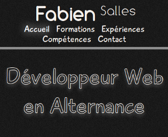
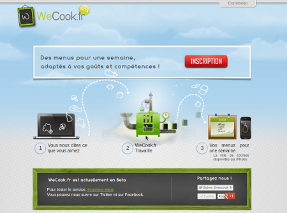
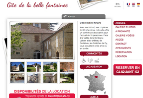
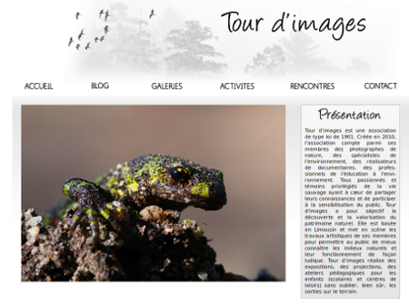

Développeur Web en Alternance
Bienvenue sur mon site! J'ai 21 ans et je suis en Licence Miage en Alternance. Le site est actuellement en construction. Si vous désirez me connaître davantage, vous pouvez me retrouver sur les différents sites ci-dessous :
Formations
Licence MIAGE en alternance
Université Paris Ouest - Nanterre La Défense - 2011 / 2012
La licence MIAGE (Méthodes Informatiques Appliquées à la Gestion des Entreprises) est une licence générale permettant d'acquerir des compétences à la fois en informatique et en gestion.
Matières : C, SAS, SQL, PL/SQL, JAVA, Merise, Droit, Comptabilité, Marketing, Comportement du consommateur ...
DUT Informatique
Université de Limoges - 2009 / 2011
Le DUT (Diplôme universitaire de technologie) Informatique a pour but de former des informaticiens généralistes de niveau Bac+2 au travers d'une solide formation théorique et pratique.
Matières : C / C++, SQL, JAVA, PHP, HMTL, CSS, JavaScript, Merise, UML, Comptabilité, Gestion, Économie, Droit ...
Bac STG option GSI mention : Assez bien
Lycée Suzanne Valadon - Limoges - 2008 / 2009
Matières : Gesiton, Comptabilité, Management, Économie, Droit, VBA, SQL, PHP, HTML, CSS, Merise ...
Expériences

Réalisation du site www.fabiensalles.com
Paris - Îles-de-France - mai 2012
Réalisation de mon site personnel afin de créer un Curriculum vitae et d'acquérir de nouvelles compétences.
Utilisation de : Git, HTML5, CSS3, SASS (Compass), Mootools

Développeur Web chez WeCook.fr
Evry - Îles-de-France - septembre 2011 à aujourd'hui
Je suis actuellement Développeur web chez WeCook.fr depuis septembre 2011. Ce poste m'a permis d'utiliser le framework PHP Symfony et d'améliorer mes connaissance en HTML5, CSS3, jQuery et jQuery UI.
J'ai aussi appris à faire des tests fonctionnels, à utiliser les API facebook et twitter, à découvrir la POO en Javascript et à développer des notions d'ergonomies.
Utilisation de : SDKs Facebook, PHP5, Symfony 1.4, HTML5, CSS3, LESS, jQuery / jQuery UI, SVN, API Twitter, Selenium, Eclipse

Développeur Web chez Frianbiz
Courtabouef - Îles-de-France - avril 2011 à juin 2011
Ce poste ma était attribué pour un stage de 10 semaines au cours de mon DUT. Il aura été ma première expérience dans le monde du web et ma fait découvrir différentes choses tels que Scrum, jQuery et une vision du travail en SSII que je n'avais pas jusqu'à présent.
Utilisation de : PHP5 (MVC), SVN, jQuery, HTML, CSS3, Scrum, NetBeans

Réalisation du site www.tourdimages.fr
Limoges - Limousin - decembre 2010 à janvier 2011
Utilisation de : PHP5 (MVC), SVN, HTML, CSS, JavaScript, XML
Compétences
En construction
Contact
En construction